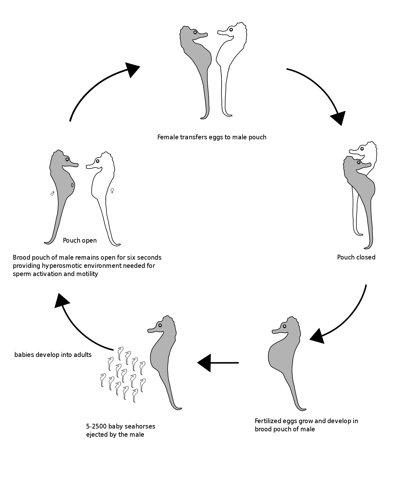

Seahorses are named after their unique appearance and boney structure. They do not have scale, but a thin skin that stretches over bony plates that create rings down their spine. Each species has a distinct number of rings. The armor of bony plates also protects them against predators and because of this outer skeleton, they no longer have ribs.
Seahorses swim very poorly, rapidly fluttering a dorsal fin and using pectoral fins to steer. The slowest-moving fish in the world is H. zosterae (the dwarf seahorse), with a top speed of about 5 ft (1.5 m) per hour. Since they are poor swimmers, they are most likely to be found resting with their prehensile tail wound around a stationary object. They have long snouts, which they use to suck up food, and their eyes can move independently of each other like those of a chameleon.
Seahorses use their long snout to eat their food with ease. However, they are slow to consume their food and have extremely simple digestive systems that lack a stomach, so they must eat constantly to stay alive. Seahorses are not very good swimmers, and for this reason they need to anchor themselves to seaweed, coral or anything else that will anchor the seahorse in place. They do this by using their prehensile tails to grasp their object of choice. Seahorses feed on small crustaceans floating in the water or crawling on the bottom. With excellent camouflage seahorses ambush prey that floats within striking range, sitting and waiting until an optimal moment. Mysid shrimp and other small crustaceans are favorites, but some seahorses have been observed eating other kinds of invertebrates and even larval fish.
In a study of seahorses, the distinctive head morphology was found to give them a hydrodynamic advantage that creates minimal interference while approaching an evasive prey. Thus the seahorse can get very close to the copepods on which it preys. After successfully closing in on the prey without alerting it, the seahorse gives an upward thrust and rapidly rotates the head aided by large tendons that store and release elastic energy, to bring its long snout close to the prey. This step is crucial for prey capture, as oral suction only works at a close range. This two-phase prey capture mechanism is termed pivot-feeding. Seahorses have three distinctive feeding phases: preparatory, expansive, and recovery. During the preparatory phase, the seahorse slowly approaches the prey while in an upright position, after which it slowly flexes its head ventrally. In the expansive phase, the seahorse captures its prey by simultaneously elevating its head, expanding the buccal cavity, and sucking in the prey item. During the recovery phase, the jaws, head, and hyoid apparatus of the seahorse return to their original positions.
The amount of available cover influences the seahorses feeding behaviour. For example, in wild areas with small amounts of vegetation, seahorses will sit and wait, but an environment with extensive vegetation will prompt the seahorse to inspect its environment, feeding while swimming rather than sitting and waiting. Conversely, in an aquarium setting with little vegetation, the seahorse will fully inspect its environment and makes no attempt to sit and wait.
Seahorses are mainly found in shallow tropical and temperate salt water throughout the world, from about 45°S to 45°N. They live in sheltered areas such as seagrass beds, estuaries, coral reefs, and mangroves. Four species are found in Pacific waters from North America to South America.
Anatomical evidence, supported by molecular, physical, and genetic evidence, demonstrates that seahorses are highly modified pipefish. The fossil record of seahorses, however, is very sparse. The best known and best studied fossils are specimens of Hippocampus guttulatus (though literature more commonly refers to them under the synonym of H. ramulosus), from the Marecchia River formation of Rimini Province, Italy, dating back to the Lower Pliocene, about 3 million years ago. The earliest known seahorse fossils are of two pipefish-like species, H. sarmaticus and H. slovenicus, from the coprolitic horizon of Tunjice Hills, a middle Miocene lagerstätte in Slovenia dating back about 13 million years. Molecular dating finds that pipefish and seahorses diverged during the Late Oligocene. This has led to speculation that seahorses evolved in response to large areas of shallow water, newly created as the result of tectonic events. The shallow water would have allowed the expansion of seagrass habitats that selected for the camouflage offered by the seahorses' upright posture. These tectonic changes occurred in the western Pacific Ocean, pointing to an origin there, with molecular data suggesting two later, separate invasions of the Atlantic Ocean. In 2016, a study published in Nature found the seahorse genome to be the most rapidly evolving fish genome studied so far.
The male seahorse is equipped with a pouch on the ventral, or front-facing, side of the tail. When mating, the female seahorse deposits up to 1,500 eggs in the male's pouch. The male carries the eggs for 9 to 45 days until the seahorses emerge fully developed, but very small. The young are then released into the water, and the male often mates again within hours or days during the breeding season
During fertilization in Hippocampus kuda the brood pouch was found to be open for only six seconds while egg deposition occurred. During this time seawater entered the pouch where the spermatozoa and eggs meet in a seawater milieu. This hyperosmotic environment facilitates sperm activation and motility. The fertilization is therefore regarded as being physiologically ‘external’ within a physically ‘internal’ environment after the closure of the pouch. It is believed that this protected form of fertilization reduces sperm competition among males. Within the Syngnathidae (pipefishes and seahorses) protected fertilization has not been documented in the pipefishes but the lack of any distinct differences in the relation of testes size to body size suggests that pipefishes may also have evolved mechanisms for more efficient fertilization with reduced sperm competition.
Before breeding, seahorses may court for several days. Scientists believe the courtship behavior synchronizes the animals' movements and reproductive states, so that the male can receive the eggs when the female is ready to deposit them. During this time, they may change color, swim side by side holding tails or grip the same strand of sea grass with their tails, and wheel around in unison in what is known as a "predawn dance". They eventually engage in a "true courtship dance" lasting about 8 hours, during which the male pumps water through the egg pouch on his trunk which expands and opens to display its emptiness. When the female’s eggs reach maturity, she and her mate let go of any anchors and drift upward snout-to-snout, out of the sea grass, often spiraling as they rise. They interact for about 6 minutes, reminiscent of courtship. The female then swims away until the next morning, and the male returns to sucking up food through his snout. The female inserts her ovipositor into the male's brood pouch and deposits dozens to thousands of eggs. As the female releases her eggs, her body slims while his swells. Both animals then sink back into the sea grass and she swims away.
This initial courtship behaviour takes place about 30 minutes after dawn on each courtship day, until the day of copulation. During this phase the males and females will remain apart during the night, but after dawn they will come together in a side-by-side position, brighten, and engage in courtship behaviour for about 2 to 38 minutes. There is repeated reciprocal quivering. This starts when the male approaches the female, brightens and begins to quiver. The female will follow the male with her own display, in which she will also brighten and quiver about 5 seconds later. As the male quivers, he will rotate his body towards the female who will then rotate her body away. During phase 1 the tails of both seahorses are positioned within 1 cm of each other on the same hold-fast and both of their bodies are angled slightly outward from the point of attachment. However, the female will shift her tail attachment site, causing the pair to circle their common hold-fast.
This phase begins with the female beginning her pointing posture, by leaning her body towards the male, who will simultaneously lean away and quiver. This phase can last up to 54 minutes. Following phase 2 is a latency period (typically between 30 minutes and four hours), during which the seahorses display no courtship behaviour and females are not bright; males will usually display a pumping motion with their body.
Seahorses in Phase 2 of courtship The third phase begins with the females brightening and assuming the pointing position. The males respond with their own brightening and pointing display. This phase ends with the male departing. It usually lasts nine minutes and can occur one to six times during courtship.
The final courtship phase includes 5-8 bouts of courtship. Each bout of courtship begins with both the male and female anchored to the same plant about 3 cm apart; usually they are facing each other and are still bright in colour from the previous phase. During the first bout, following the facing behaviour, the seahorses will rise upward together anywhere from 2 to 13 cm in a water column. During the final rise the female will insert her ovipositor and transfer her eggs though an opening into the male's brood pouch
Because data is lacking on the sizes of the various seahorse populations, as well as other issues including how many seahorses are dying each year, how many are being born, and the number used for souvenirs, there is insufficient information to assess their risk of extinction, and the risk of losing more seahorses remains a concern. Some species, such as the Paradoxical Seahorse, H. paradoxus, may already be extinct. Coral reefs and seagrass beds are deteriorating, reducing viable habitats for seahorses. Additionally, bycatch in many areas causes high cumulative effects on seahorses, with an estimated 37 million individuals being removed annually over 21 countries.